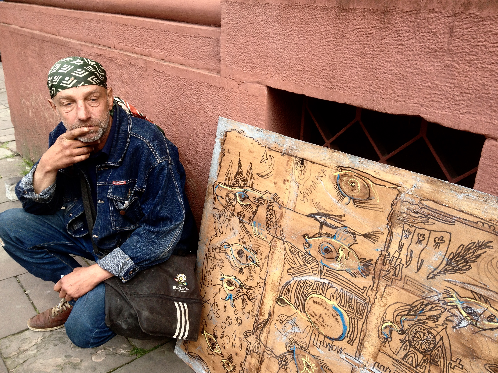

Усі роботи я підписую САМ99. Львівска політехніка – моя альма матер. Я навчався на архітектора. Спроектував два індивідуальні будинки. Але у 99-му році я для себе зрозумів, що ніколи більше не буду архітектором, а буду художником. Нігерія, Кіпр, Ліван, Бенін, Європа, Усурійськ, Карелія, Хабаровськ. Мене кидало по світу. Але я постійно мріяв про Львів. Одна коханка на набережній Петрозаводська вмовляла мене залишитись з нею: «Вітька залишайся тут, я тебе люблю». Нащо я відповів: «Видишь, куда облака идут? Они идут на запад. И мне – туда, во Львов.»
У цьому світі для мене головне дивитись на гору. Коли я був архітектором, я не підводив очей до неба. А зараз дивлюсь і думаю «йолі-палі 15 років ходив, а такого чуда не бачив»
Небо говорить само за себе. Повірте мені, небо – то вже мистецтво.
Я прикалююсь с таких речей. Справа не в цій фанері, а в написі на ній «Меблевий УСРСР». Риби – символ Ісуса. Я трошки християнин. Ось тут у мене і храми виростають і місяць і сонце. Я вільний художник: хочу вийду, хочу не вийду. А решту робіт залишаю собі. Хочу власну майстерню, хочу малювати. У мене тільки три кольори було і маркер, але я би зміг зробити набагато краще.
Мені кажуть, що я безхатько, бомж. А ви пам’ятаєте, ким був Сковорода? Я мандрівник. І я не забув, ким був Ісус.
Чому є час розкидувати каміння, а чому час – збирати? Вже п’ятнадцять років на вулиці я збираю каміння. І повірте, мене боженько день в день дає мені можливість вижити і оглянути той всесвіт, який він зробив. Я шкодую, що колись у мене не було хмар над головою...
Ходити по смітниках, збирати дивовижні речі находити і збирати їх до купи – то є клас художника. Я на себе не тягну одеяло. Люди не розуміють, що художник – це лінія розриву розриву між Інь-Янь, чоловіком і жінкою. Його місія – збирати до купи. Чесно-відверто. Від щирого серця кажу.
Автор: Валентина Семеніхіна